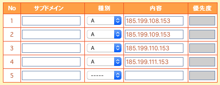
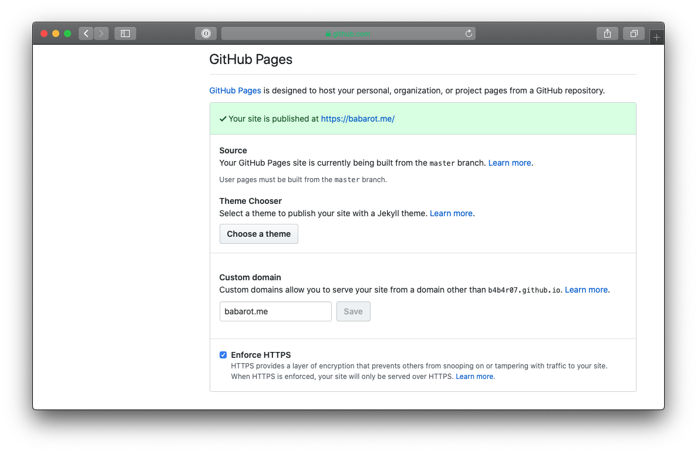

GitHub Pages で静的ページを公開するのが簡単なのでよく使う。
これまで公開したサイトの HTTPS 化は Cloudfrare でやっていた。
めんどくさくて移行していなかったんだけど HTTPS 化するのも GitHub Pages の設定画面からできるようなのでやっていく。
1. IP をレジストラに追加する
公式ガイドにある通り、GitHub の A レコードをすべて登録する。
185.199.108.153
185.199.109.153
185.199.110.153
185.199.111.153

待っていると数分でつながるようになる。
$ dig babarot.me +nostats +nocomments +nocmd
; <<>> DiG 9.10.6 <<>> babarot.me +nostats +nocomments +nocmd
;; global options: +cmd
;babarot.me. IN A
babarot.me. 3185 IN A 185.199.110.153
babarot.me. 3185 IN A 185.199.108.153
babarot.me. 3185 IN A 185.199.111.153
babarot.me. 3185 IN A 185.199.109.153
2. 該当リポジトリで設定

- Custom domain に使用する独自ドメインを書く (CNAME ファイルがコミットされる)
- 少し待ってると Enforce HTTPS のチェックボックスが押せるようになる
- 少し待ってるとブラウザなどから https で接続できるようになる
ここまで正味15分くらい、待ち時間を入れても30分くらいでできた。
参考